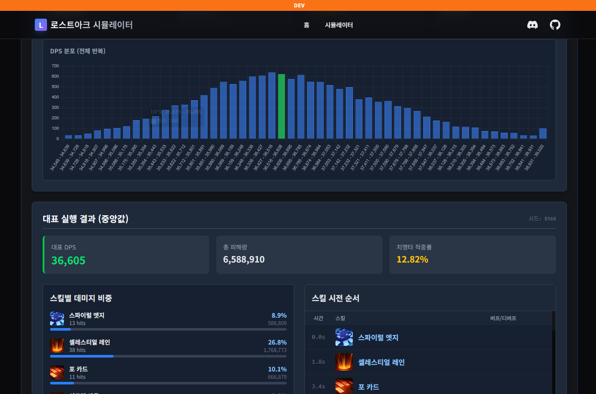
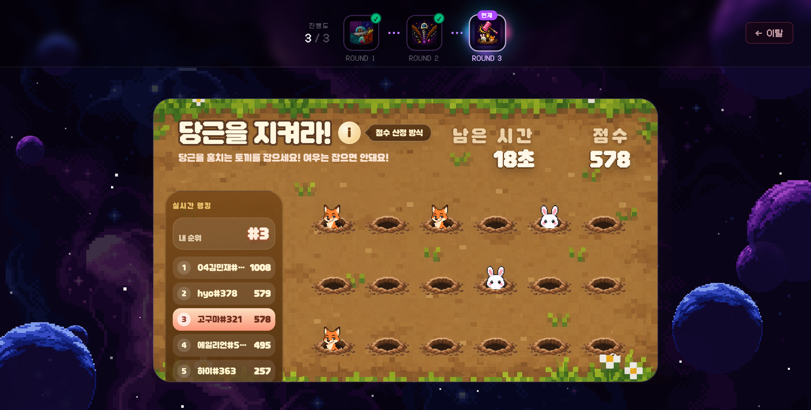
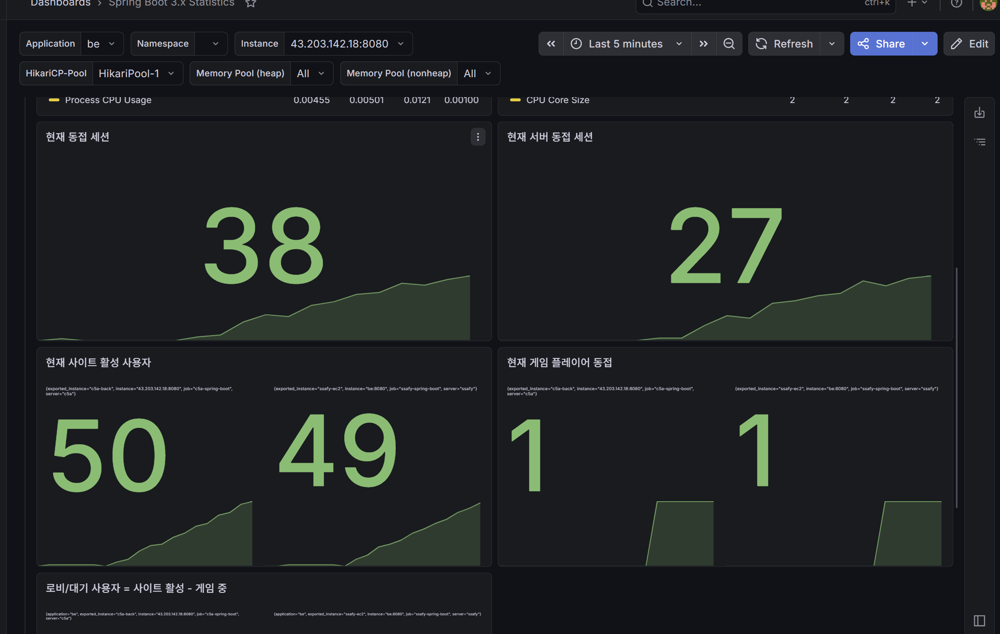

Simulation Developer Portfolio
김민재
Simulation Developer
복잡한 규칙을 실행 가능한 시스템으로 만들고, 기술 선택의 이유를 실제 구현으로 검증합니다.
02 / All-in-one
복잡한 규칙을 실행 가능한 시스템으로 만듭니다.
김민재
- Role
- Simulation Developer
- Focus
- Simulation · Realtime · Backend
- Phone
- 010-2697-1285
- kmj9870@gmail.com
- GitHub
- github.com/acapzed
CoreTypeScript · Rust · Python
BackendSpring Boot · Java/Kotlin · STOMP · Redis · MySQL · PostgreSQL
FrontendReact · Vite · Zustand · WebAssembly
Infra / GameDocker · Nginx · GitHub Actions · Unity NGO
03 / Featured Project
로스트아크 시뮬레이터
감이 아니라 시뮬레이션 분포로 캐릭터 성능을 판단하게 만들었습니다.
랜덤성과 순간 판단이 큰 직업은 단일 평균값만으로 기대 성능을 설명하기 어렵습니다.
스킬 로테이션을 반복 실행해 DPS 분포, 스킬별 비중, 시전 순서를 확인하는 웹 도구를 설계했습니다.
서버 연산 비용과 대기시간을 줄이기 위해 시뮬레이션 연산을 클라이언트 WASM으로 옮겼습니다.
Rust
WebAssembly
React
PostgreSQL
개발 중
lostarksim.com/simulator

04 / Architecture
로스트아크 시뮬레이터 시스템 구조
Point 01 서버가 연산을 떠안지 않도록 시뮬레이션 엔진을 WASM으로 분리하고, Web Worker에서 반복 실행을 병렬 처리했습니다.
보냄캐릭터 세팅→
받음스킬/장비 기준값←
남김실행 결과→
Point 02 스킬, 장비, 각인처럼 패치마다 달라지는 기준 데이터를 서버에서 모아 관리하고, 버전별로 비교할 수 있게 정리했습니다.
저장버전별 기준값→
캐시자주 보는 데이터↔
모음비교 가능한 결과→
Point 03 단일 DPS 값만 보여주지 않고 반복 실행 결과를 모아 분포, 중앙값, 스킬별 기여도처럼 판단 가능한 통계로 변환했습니다.
05 / Realtime System
우주오락실
SSAFY 공통 프로젝트
최종 3등
100명이 동시에 플레이해도 흐름이 깨지지 않는 실시간 게임 구조를 만들었습니다.
공통 게임 프레임워크, 마법 영창, 드릴 다운을 프론트엔드와 백엔드 양쪽에서 구현했습니다.
멀티 서버 환경에서 로컬 사용자 레지스트리만으로는 다른 서버 유저에게 결과를 전달할 수 없었습니다.
Redis Pub/Sub envelope을 사용해 서버 간 private routing을 구현하고 랭킹 갱신 흐름을 안정화했습니다.

동시 접속100명
랭킹 갱신1.5초 배치
재접속 처리10초 유예
06 / Load Balancing
서버 상태를 읽고,
트래픽을 나누는 구조를 검증했습니다.
우주오락실은 여러 서버가 동시에 게임 요청을 처리하는 구조였고, 단순 분산이 아니라 서버 부하를 기준으로 요청을 배분하는 흐름을 테스트했습니다.

실제 사용자가 동시에 접속하는 상황을 가정해 게임 진행, 랭킹 갱신, 재접속 흐름을 함께 확인했습니다.
요청 수만 나누는 방식이 아니라 서버 처리 상태를 기준으로 더 여유 있는 인스턴스에 요청을 보냈습니다.
특정 서버가 바빠져도 STOMP 연결과 Redis Pub/Sub 전달 흐름이 끊기지 않도록 구조를 검증했습니다.
07 / Project Map
필요한 게 있으면 바로 배우고,
완성된 서비스까지 만들어냅니다.
불편한 지점을 발견하면 기술을 먼저 가리지 않고, 필요한 만큼 공부해서 실제로 쓸 수 있는 결과물까지 만들었습니다.
Perfume
중학생 때 직접 기획한 퍼즐 게임을 완성해 Google Play에 출시했습니다. 기능을 만들기 위해 필요한 도구를 찾아가며 끝까지 배포까지 진행했습니다.
구미캠퍼스 식단
식단을 앱으로만 확인해야 하는 불편함을 해결하려고 공식 앱의 API 흐름을 뜯어보고, 브라우저에서 바로 확인하는 확장 프로그램으로 만들었습니다.
내 요리를 부탁해
Unity 기반 2인 협동 요리 게임에서 조리 인터랙션, 재료 물리, 인벤토리 시스템을 맡아 게임 안에서 동작하는 기능으로 구현했습니다.
이정도면 잘키웠다
HoYoLAB의 원신, 붕괴: 스타레일, 젠레스 존 제로 전적 페이지에서 캐릭터 정보를 읽고, 커뮤니티 기준표와 비교하는 확장 프로그램을 만들었습니다. 실사용자는 200명대입니다.
08 / Contact
프로젝트의 규칙과 판단 과정을 함께 설명드릴 수 있습니다.
로스트아크 시뮬레이터의 시뮬레이션 설계, 우주오락실의 실시간 동기화, 프로젝트별 역할과 기술 판단 과정을 중심으로 정리했습니다.
김민재
Simulation Developer
010-2697-1285
kmj9870@gmail.com
github.com/acapzed
acapz.dev
lostarksim.com